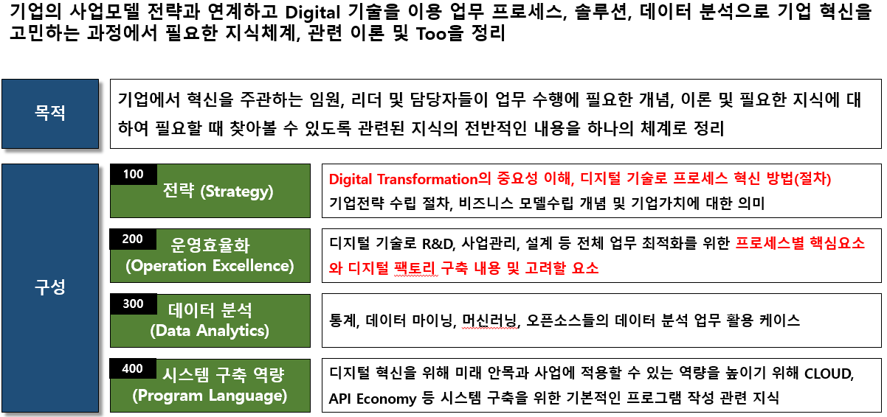
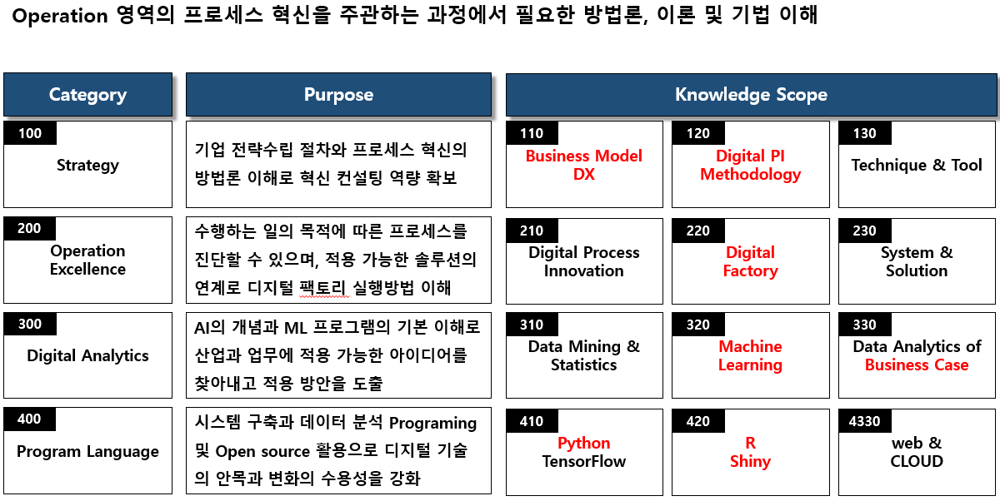
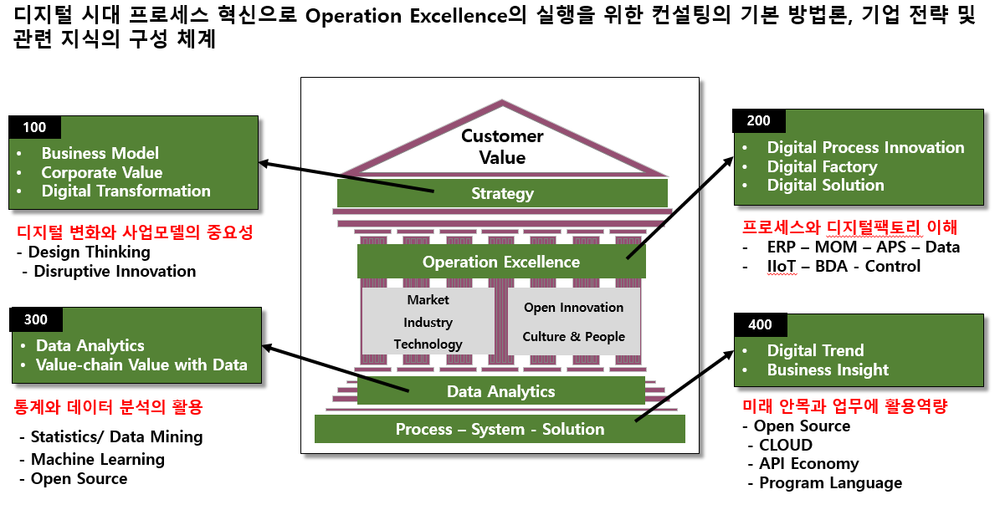
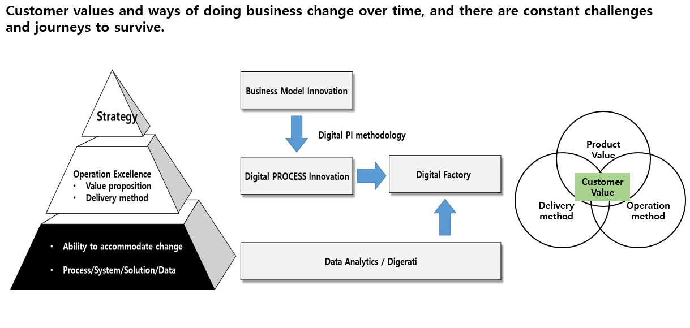

ver 1.1 (2018.12/19) >>> Wecome screen
Digital Factory 성공 요소는 고객 요구에 부응하기 위해 프로세스와 시스템의 변화가 필요할 때 얼마나
신속하게 반응하고 대응이 가능한 지가 중요한 요소가 될 것이다.
전체 웹의 구성 : for Digital PI Consultant - Introductiont

for Digital PI Consultant - Body of Knowledge

디지털 프로세스 혁신에 필요한 이론 체계

Customer value and Change

외부 자원의 손쉬운 활용과 외부변화에 신속한 대응의 업무 환경
Digital Factory가 중요한 것은 그것을 통한 운영의 효율화와 그것으로 고객이 받는 새로운 가치이며, 어떤 솔루션을 사용했는 지는
고객에게 중요한 것이 아니다.
핵심은 고객에게 제공하는 제품/서비스 자체와 그 것을 전달하는 방식이지 얼마나 내부 시스템이 독특한 지는 중요하지 않다.
지금의 디지털 기술, Open source, CLOUD를 이용하면 내부에 구축하는 것이 아닌 최적의 것을 빌려서 사용하면 되는 시대이다.
외부의 좋은 기술을 경쟁자보다 빠르게 내부에 적용하거나 외부와 협력을 효과적으로 할 수 것이 경쟁력이고,
그 것을 가능케 하는 프로세스, 시스템, 데이터 활용, 직원들의 역량을 갖추어야 한다.
Digerati 인재 육성 : API Economy를 이해하고 Open source, CLOUD 활용하여 자신의 업무에 스스로 활용할 수 있는 직원들이
필요하며 그들이 그 것을 자유롭게 할 수 있도록 하게해야 한다.
 Image source
Image source